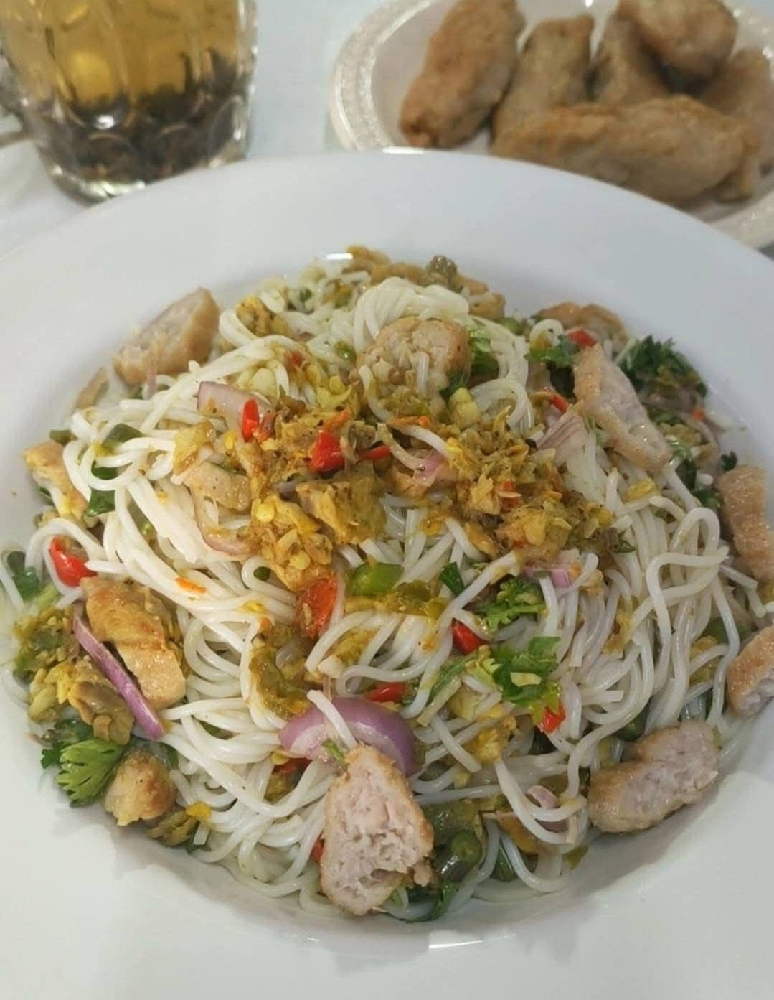

Home
Rakhine Mont Di

Description
Rakhine Mont Di Thoke is a traditional, intensely flavorful dry-tossed
noodle dish originating from the coastal Rakhine State in western Myanmar.
Unlike the soup-based versions found elsewhere, this version is intensely
aromatic, spicy, and tangy, designed to awaken all your senses. It
features thin rice vermicelli tossed with a concentrated, pungent fish
paste (ngapi), finely flaked fish (typically sea fish like mackerel),
roasted chili powder, and crushed toasted chickpea flour.
Because it contains very little liquid, the noodles absorb all the rich,
bold flavors of the sea, balanced by a sharp tang from tamarind and a
generous amount of fresh herbs, garlic oil, and crispy shallots. It is a
must-try for spice and seafood lovers looking for an authentic taste of
coastal Myanmar.
Ingredients
- Thin rice vermicelli (Mont Di noodles) – 500 g
- Sea fish (such as mackerel or snapper) – 400 g
- Rakhine fish paste (Ngapi) – 2 tablespoons
-
Tamarind paste – 3 tablespoons (mixed with warm water to make a thin
extract)
- Garlic – 8 cloves (finely minced and fried in oil until crispy)
- Shallots – 5 (thinly sliced and fried)
- Garlic oil or peanut oil – 4 tablespoons
-
Roasted chili powder – 1 to 2 tablespoons (adjust to spice preference)
- Roasted chickpea flour – 3 tablespoons
- Fish sauce – 2 tablespoons
- Salt and black pepper – to taste
-
Garnishes: Finely chopped cilantro, sliced shallots, roasted peanuts,
and a side bowl of the concentrated fish boiling broth
Steps
-
Boil the fish and make the base broth: Clean the fish and boil it in a
pot of water with a pinch of salt and a spoonful of fish paste until
cooked. Remove the fish, let it cool, and flake the meat finely, setting
the remaining fish broth aside in a small pot to serve on the side.
- Boil the fish and make the base broth: Clean the fish and boil it in a pot of water with a pinch of salt and a spoonful of fish paste until cooked. Remove the fish, let it cool, and flake the meat finely, setting the remaining fish broth aside in a small pot to serve on the side.
-
Toss the noodles: In a large mixing bowl, combine the cooked rice vermicelli noodles with the garlic oil (along with some of the crispy fried garlic and shallots).
-
Add the core flavors: Add the flaked fish, dissolved fish paste, tamarind extract, fish sauce, and roasted chili powder directly onto the noodles.
-
Thicken and combine: Sprinkle in the roasted chickpea flour, which helps bind the rich sauce to the noodles. Toss everything vigorously and thoroughly until the noodles are evenly coated in the pungent, spicy, and tangy sauce.
-
Serve: Garnish with extra crispy fried shallots, fresh cilantro, and roasted peanuts. Serve immediately with the warm side bowl of fish broth, which can be sipped in between bites of the spicy noodles.